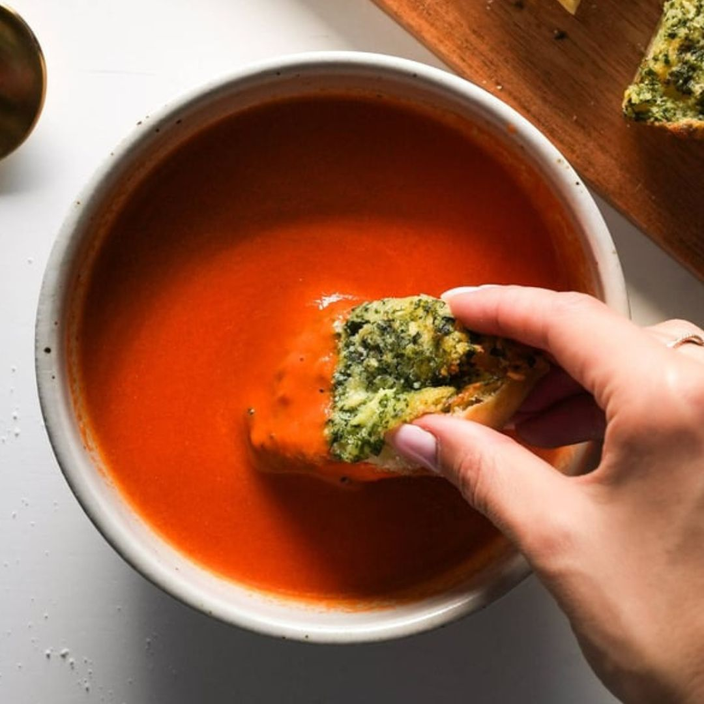
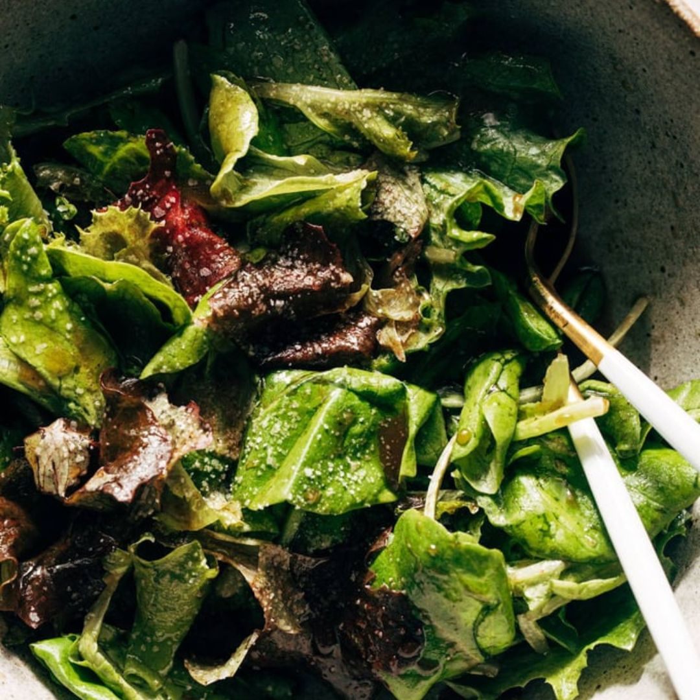
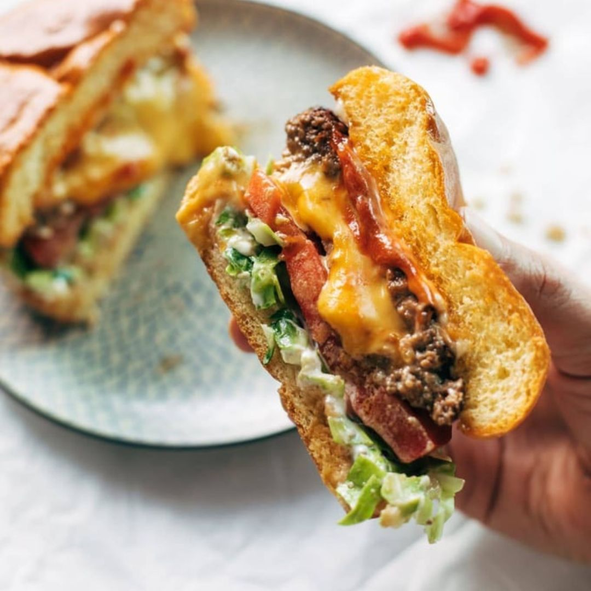

5 Ingredient Tomato Soup
Ingredients:
- Two 28-ounce cans San Marzano tomatoes
- 1 stick (8 tablespoons) salted butter
- 1 yellow onion, peel removed and cut into 4 chunks
- 3–4 cloves smashed garlic
- 1 1/2 teaspoons salt
Instructions:
- Make the Tomato Soup: Put the tomatoes, butter, and onion in a large saucepan or Dutch oven. Bring it up to a low bubble, then turn the heat to medium low. Cover partially with a lid; let it simmer for 45 minutes. Stir every 15 minutes or so to prevent scorching on the bottom.
- Remove Onion Chunks: Remove the onion pieces using tongs. I leave the garlic in there, but that’s up to you!
- Blend the Tomato Soup: Using an immersion blender, blend up the soup until it’s a smooth as you want it. Taste and adjust; you can thin it out with milk, water, broth, cream, whatever you want; I just leave it as-is!
- Serve: Serve tomato soup with garlic bread, grilled cheese, croutons, crackers, pesto, whatever you like!
Simple Green Salad
Ingredients:
- 1/4 cup maple syrup
- 1/4 cup balsamic vinegar
- 1/2 cup olive oil
- 1 teaspoon salt
- black pepper to taste
- 4 cups spring greens
- seeds, nuts, or any other crunchies for topping if you want
Instructions:
- Shake dressing ingredients up in a jar. Taste and adjust to get it just right for how you like it.
- Toss a generous amount of spring greens with just a few light drizzles of dressing – you want to get the leaves entirely coated in dressing (but not so much that they get soggy). I often use my hands to gently toss it well without breaking all the greens. Serve immediately.
Juicy Lucy
Ingredients:
- 2 lbs. ground beef
- 2 tablespoons burger seasoning
- 6–12 slices American cheese
- 6 brioche buns
- Toppings: Lettuce, tomato, onion, pickles
- Sauces: Ketchup, mustard, mayo
Instructions:
- Mix the spices into the ground beef (I just mix by hand). Divide the beef into 6 even sections.
- Form each section into two thin patties (a smaller top patty, and a larger bottom patty). Place 1-2 folded pieces of cheese on the bottom patty, and place the smaller top patty over it, pinching up the edges to seal.
- Grill or pan fry for about 5 minutes on medium heat, or until cooked to your desired doneness and cheese is melted. We usually sacrifice one Juicy Lucy and cut into it to test the doneness of both the beef and cheese.
- Let the Juicy Lucys rest for a minute or two. This is essential, otherwise the cheese will be so hot that it will literally come exploding out all over the place.
- Serve on buns with your favorite toppings!